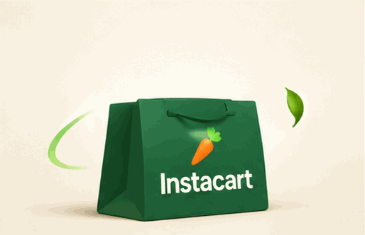

GROCERY ORDER HELP & INFORMATIONNeed a hand with
Need a hand with
your Instacart order?
Explore practical guides for delivery, pickup, order updates, missing items, payments and more. Find useful next steps in one place.
Customer assistance507-722-0465Call now →
Explore help topics →How it works
BROWSE OUR INFORMATION
What can we help you understand?
Choose a topic to read general guidance and find the appropriate next step.
HOW TO USE THIS GUIDEClear information.
Clear information.
Practical next steps.
Choose a topic, review the general guidance, then use the retailer's official support channel whenever your question involves private order or account details.
01 Choose the topic that matches your question.
02 Review the steps and information to check.
03 Use official support for order-specific help.